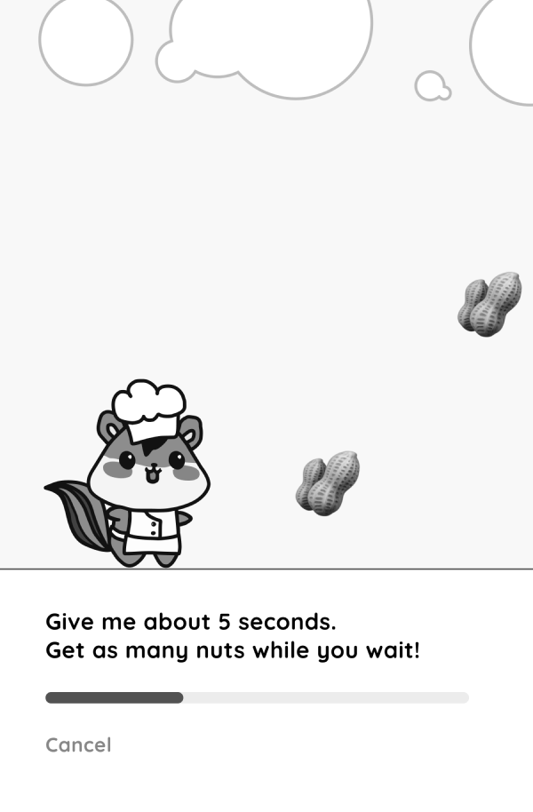
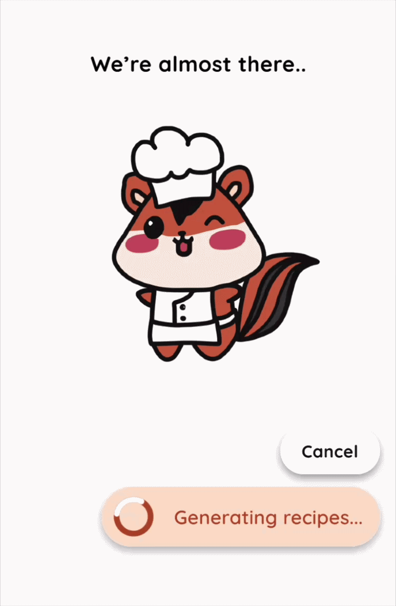
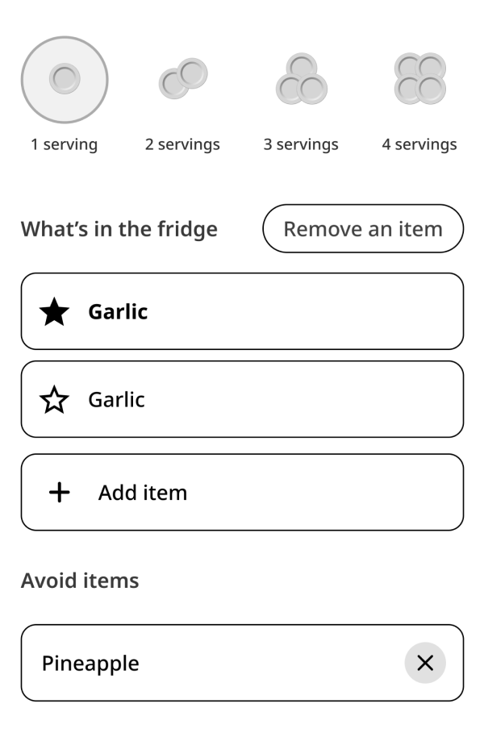
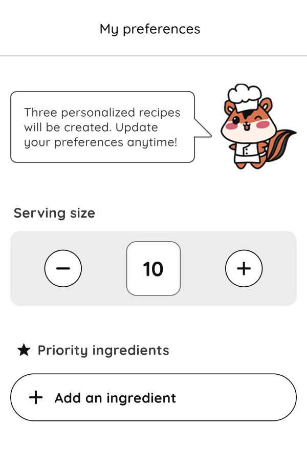
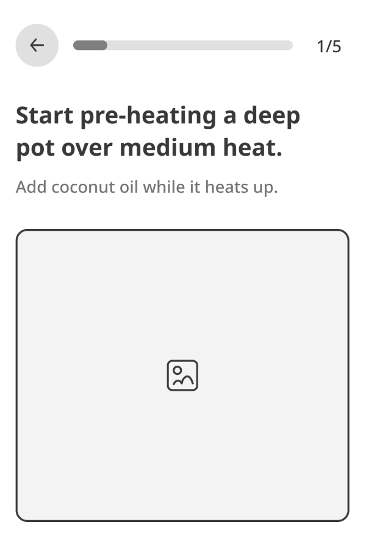
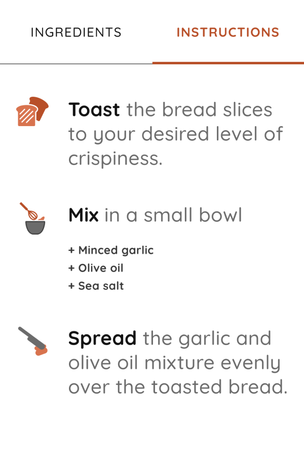

Designing an AI-native
cooking companion

Problem
Recipes make real life cooking hard
They often require ingredients that aren’t available, take longer than expected, or feel too complex to follow.
Research
Initial market signal
Conducted a survey with mockup screens to gauge reaction to the concept, with 53% of people sharing email, showing warm interest.
Voice-of-customer feedback
Solution
AI-powered recipe system
Generates up to three recipe options from available ingredients to reduce choice overload. Key decision: limiting results to three makes decisions easier and helps manage token usage.

Iteration
Reducing perceived wait time
Key decision: the character companion is animated during AI generation to make waiting feel shorter while GPT generates a response.


Simplifying ingredient selection
Key decision: available ingredients drive meal choices, so a preference center focused on what’s in the fridge or leftover ingredients instead of a predefined list.


Making recipes easier to follow
Key decision: recipe complexity discourages cooking, leading to separating ingredients from steps in generated results, with minimal instructions supported by visual cues.

